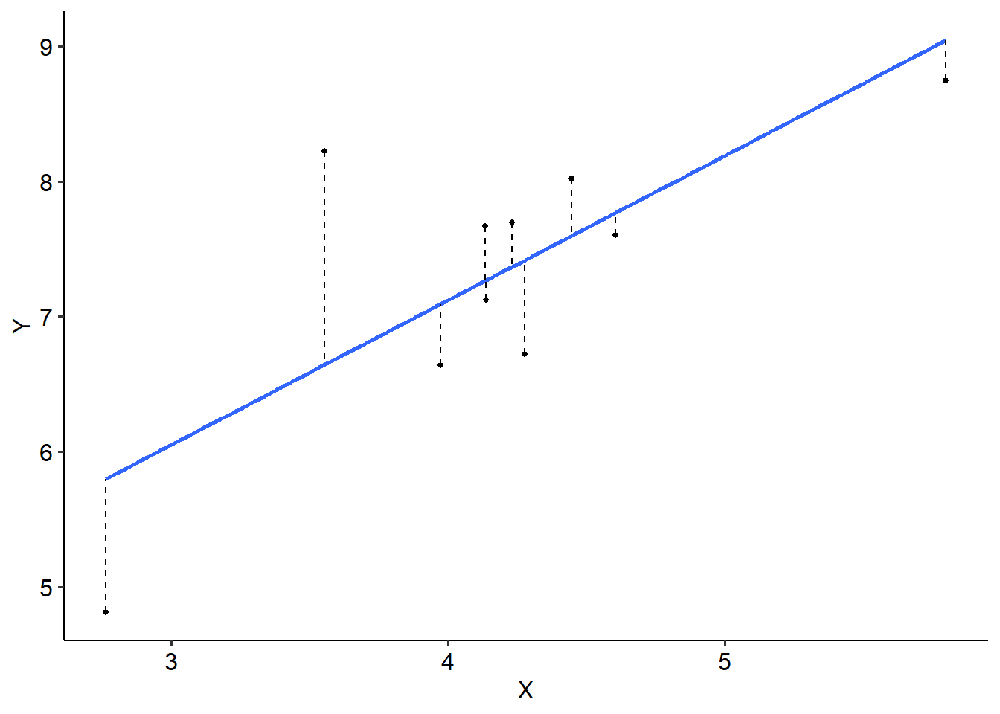

9.5 Two-way repeated measures ANOVA
9.5.1 Introduction
Similar to its one-way counterpart, in a two-way ANOVA we assess the effect of two within-subjects variables on a dependent variable.
The following example is completely fictional, and has no real grounding in theory (as far as I’m aware). It’s intentionally facetious, but hopefully demonstrates the process of doing a two-way repeated measures ANOVA.
9.5.2 Example
You met Victor and Gloria in the second statistics assignment, who were working with data looking at what predicts high school GPA. They’ve now moved onto a new project about whether listening to happy or sad music may affect exam performance. To do this, they design a nifty little study. They recruit 20 participants and bring them into the lab. This is their procedure:
- Participants come into the lab and do a series of standard maths exams. The maths exams are either easy, medium or hard, and participants are randomly assigned to do either the easy or the hard one first. They are also randomly assigned either happy or sad background music as they do the exam.
- Once they have completed the first exam, they take a 10 minute break and then do another exam that is easy, medium, or hard, and with either happy or soft music in the background.
- This process repeats until they have done all combinations of difficulty and background music.
- Each exam is scored out of 100.
We have two within-subjects independent variables here:
- Difficulty of the exam (3 levels: easy, medium, hard)
- Background music (2 levels: happy or sad)
Every participant therefore does 6 maths exams: easy-happy, easy-sad, medium-happy, medium-sad, hard-happy and hard-sad. The dependent variable of interest is their exam score. We’re interested in whether the difficulty and the music type have an effect on exam performance. Because our two IVs are within-subject variables, we will want to use a two-way repeated measures ANOVA.
## Rows: 80 Columns: 4
## ── Column specification ──────────────────────────────────────────────────────────────────────────────────
## Delimiter: ","
## chr (2): difficulty, music
## dbl (2): ptcpt, grade
##
## ℹ Use `spec()` to retrieve the full column specification for this data.
## ℹ Specify the column types or set `show_col_types = FALSE` to quiet this message.Let’s start with the usual descriptives and graphs:
Eyeballing the graph, we can see that there might be some sort of effect happening. Unsurprisingly, it looks like the easy maths exams are, well. easier, because people are scoring better on them. There might be an effect of music, because in both easy and hard conditions it looks like people do better with happy music compared to sad music. But the interaction plot tells us there’s something clearly going on, and it paints a really interesting story on its own. It appears that there’s almost a ‘plateau’-ing effect with medium difficulty, in that both happy and sad hit the same point in exam scores. However, it looks like for happy music, harder exams see no further decrease in performance - but there is a sharp drop again for sad music.
9.5.3 Assumptions
The assumptions for a two-way RM ANOVA is the same as a one-way:
The data from the conditions should be normally distributed. (More specifically, the residuals should be normally distributed.)
The data for each subject should be independent of every other subject.
Sphericity must be met.
As is the case with one-way repeated measures ANOVAs, the assumption of sphericity is only tested when there are three or more levels; with only two levels, the assumption is always met. The output is below with the main ANOVA output. The sphericity for all of our effects is intact, so we don’t have any issues here, but if we did the same principle would apply - we would apply our corrections depending on the value of epsilon.
Let’s also see if our variables are normally distributed:
R-Note: For a repeated measures ANOVA, for some reason the closest I can get to generating what Jamovi does is to build an aov() model without an explicit Error() term - as would be the case for a fully between-subjects ANOVA. You can then use the standardised residuals to create a Q-Q plot using the below code. Note that broom:augment() is just a helper function that nicely extracts the residuals:
aov(grade ~ difficulty * music, data = twoway_exam) %>%
broom::augment() %>%
ggplot(aes(sample = .std.resid)) +
geom_qq() +
geom_qq_line()
It’s not… great but for the purposes of demonstration, we’ll run with it anyway.
9.5.4 Output
Here’s our output from R:
twoway_exam_aov <- aov_ez(
data = twoway_exam,
id = "ptcpt",
dv = "grade",
within = c("difficulty", "music"),
anova_table = list(es = "pes"),
include_aov = TRUE
)
twoway_exam_aov## Anova Table (Type 3 tests)
##
## Response: grade
## Effect df MSE F pes p.value
## 1 difficulty 1, 19 43.52 288.35 *** .938 <.001
## 2 music 1, 19 44.94 28.84 *** .603 <.001
## 3 difficulty:music 1, 19 44.24 6.02 * .241 .024
## ---
## Signif. codes: 0 '***' 0.001 '**' 0.01 '*' 0.05 '+' 0.1 ' ' 1##
## Univariate Type III Repeated-Measures ANOVA Assuming Sphericity
##
## Sum Sq num Df Error SS den Df F value Pr(>F)
## (Intercept) 261518 1 605.55 19 8205.5166 < 2.2e-16 ***
## difficulty 12550 1 826.95 19 288.3499 6.095e-13 ***
## music 1296 1 853.95 19 28.8365 3.503e-05 ***
## difficulty:music 266 1 840.55 19 6.0229 0.02394 *
## ---
## Signif. codes: 0 '***' 0.001 '**' 0.01 '*' 0.05 '.' 0.1 ' ' 1Once again this is quite a busy table! We can see that there is a significant main effect of difficulty (F(2, 38) = 189.61, p < .001), as well as a significant main effect of music type (F(1, 19) = 18.39, p < .001). There is also a significant interaction effect of difficulty and music (F(2, 38) = 10.29, p < .001). We can also see our sphericity output here; neither the difficulty variable (W = .880) nor the difficulty x music interaction (W = .788) terms show significant violation of sphericity (p .05). Therefore we have not corrected for anything in our main ANOVA output. Note that because music only has two levels, there is no sphericity test for it.
To decompose this, we’ll do our usual simple effects tests - holding one variable constant and running pairwise comparisons with the other. For this example, we’ll just hold the difficulty constant and compare music genres. We can absolutely reverse the simple effects, but for the sake of simplicity we’ll just do it the one way round for this example.
From this we can see that for easy exams, on average people scored 4.4 points higher with happy music compared to sad music (p = .023). On medium exams, there was no difference between happy and sad music (p = .900). Lastly, for harder exams people who listened to happy music scored, on average, 11.7 points higher than people who listened to sad music (p < .001). This suggests overall that happy music is probably better for completing exams than sad music, though the medium difficulty exam is a strange one here.
If, instead, we wanted to hold music type constant and test differences in difficulty, we would get this output. This paints a much more interesting picture about what is going on, and might be a more interesting way of decomposing the interaction. But remember - only do one or the other!